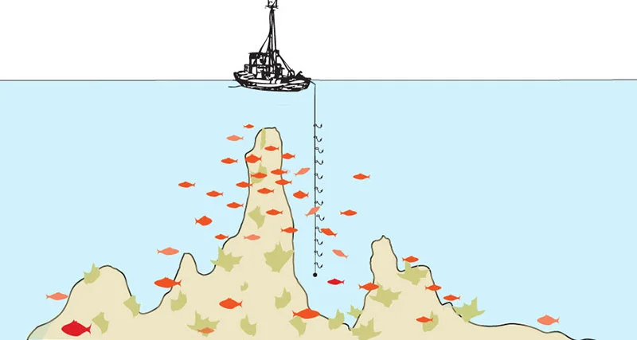

Καθετή

Η καθετή είναι τεχνική ψαρέματος βυθού όπου το δόλωμα κατεβαίνει σχεδόν κάθετα, ακριβώς κάτω από τη βάρκα ή το σημείο που ψαρεύουμε, ώστε τα αγκίστρια να δουλεύουν πάνω ή πολύ κοντά στον βυθό. Στόχος είναι κυρίως βυθόψαρα όπως σαργοί, φαγκριά, μουρμούρες, ροφούς και άλλα είδη που κινούνται χαμηλά στη στήλη του νερού.
Εξοπλισμός
Στην απλή καθετή χρησιμοποιείται κοντό καλάμι ή ακόμη και χοντρή πετονιά στο χέρι, μολύβι στο τελείωμα και 1–3 παράμαλλα με αγκίστρια λίγο πιο πάνω. Το βάρος του μολυβιού επιλέγεται ανάλογα με το βάθος και τα ρεύματα, ώστε να κρατά τα δολώματα σταθερά κοντά στον βυθό χωρίς να τα παρασύρει το ρεύμα.
Πώς δουλεύει η τεχνική
Ο ψαράς αφήνει την αρματωσιά να κατέβει μέχρι να νιώσει το μολύβι να «κάθεται» στον βυθό και στη συνέχεια μαζεύει λίγες στροφές ώστε τα αγκίστρια να αιωρούνται λίγο πιο πάνω, αποφεύγοντας σκαλώματα. Κρατά την πετονιά τεντωμένη και με ελαφρές κινήσεις του καρπού «ζωντανεύει» το δόλωμα, ενώ κάθε διακριτικό τσίμπημα ή βάρος στην άκρη της γραμμής ακολουθείται από κάρφωμα και σταθερό μάζεμα.
Πού χρησιμοποιείται
Η καθετή εφαρμόζεται κυρίως από βάρκα πάνω από βραχώδεις βυθούς, ξέρες, ναυάγια ή μικτά κομμάτια, σε μικρά αλλά και μεγάλα βάθη, όμως παραλλαγές της μπορούν να δουλέψουν και από μόλους ή αποβάθρες. Είναι τεχνική σχετικά απλή στον εξοπλισμό, αλλά πολύ αποδοτική όταν συνδυάζεται με σωστή επιλογή σημείου, δολωμάτων και ώρας, γι’ αυτό και θεωρείται «κλασική» μέθοδος ψαρέματος βυθόψαρων.